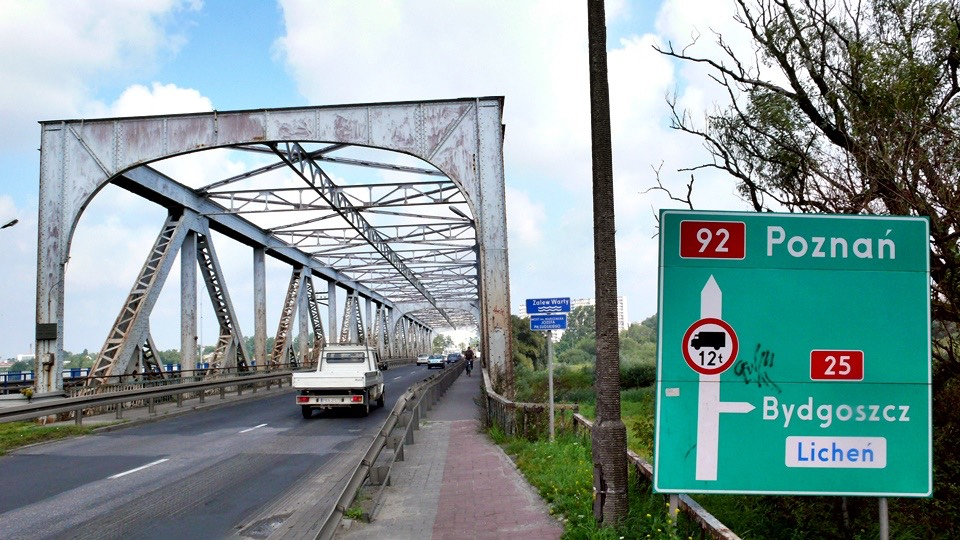

In one breath, I slept three days worth. Regardless how loud the rain sounded, it couldn’t fight my sleepyness.
I fell deep into sleep, the kind of sleep where you don’t realize where you are when you wake up.
The rain stopped early in the morning, although there were still some
dark clouds covering the sky so it seems like it might rain again.
Goose called this morning and said it will rain today,
and all I can wish is it won’t rain anymore so I can ride safely to Poznana.
Even though rain has stopped, but there is still one annoying thing, the wind is blowing very hard.
The wind is blowing in opposite to the direction I am traveling, so the whole day I rode against the wind.
I kept thinking the earlier I arrive at Poznana so I can rest comfortably for two days, but it didn’t work that way.
I rode slowly the 150Km (93 miles) to Poznana.
I had planned to arrive at Poznana in the afternoon, however by the time I arrived at Poznana it was close to dark.
The Red #2 freeway I had been on for half of Poland is now under reconstruction.
They are planning to use Poznana as the center which connects Berlin on the left and Warsaw on the right.
Even though reconstruction isn’t finished yet and only part of the way is accessible, it cuts down on the traffic flow.
It is safer with fewer cars on the road.
Even if there are lots of cars it is still ok, Polish people follow rules when driving.
The crazy drivers seen in Kazakhstan and Russia are gone now. The speed limit here is half of what it is in Russia.
Traveling over 120 days there are some things that are broken such as the carriage thing on the front of the bike.
When I was at China I found it was getting loose so I decided to have it weld in permanently.
After shaking on the whole trip from the unpaved road, two screws still fell out even after being welded in.
For one of the holes I used substitute screw to lock it in,
but for the other hole the screw the screw grain line has gone completely flat,
I can’t even lock it in with another screw anymore.
There is another matter that troubles me even more; the supporting bar is about to break.
The five big bags each have their own carrier connecting to the supporting bar.
If the supporting bar breaks, then there is nowhere I can put the 5 bags.
In addition, if just one side of the supporting bar breaks, the weight of the bike will be lop-sided.
So if just one side of the supporting bar breaks, then there is nowhere to put that one side’s bag.
Right now I don’t’ know any other way to carry those bags with me.
This problem happens where the weight is the heaviest on the back big bag.
When I realized it this morning the supporting bar is separating with the bag.
This scared me so much I tried to figure out how to lessen the weight.
Opening the bag, I took out the easier to carry but the heaviest item as well, the laptop,
this should lessen the weight on the supporting bar. But now the problem is where can I put the laptop?
Scratching my head for a while, there is no place to put this,
so I ended up putting it on top of the bags in the front.
I have to be careful when I ride the bike just in case if this flies out when I ride,
then there is no laptop for me to write the travel journals.了。
The Red #2 freeway ends here, probably changed to A2 freeway.
The rest of the way I am taking Red #92 freeway.
The one I had been riding, E30, from Belarus ends here as well.

This is the reconstruction freeway; there are 100s of Km from here to Warsaw.
The estimated finish time is 2010.
By then the flight from Warsaw to Berlin will decrease, the flight will go to Poznana instead.
Then Poznana will become a world trade center and the economy will increase as well.
I am hungry now, time to eat, looking for food in the mini mart along the street.
There is a fan inside. During the summer time Poland will sell out their fans.
Today is a good sunny day, indoor and outdoor both have cool weather.
Looking around I decided to buy the same lemon soda I got yesterday.
Yesterday I paid for $5.5Zit ($2USD), and the storeowner also gives me a free bottle of water.
Today, the exact same lemon soda is just $2.5Zit ($1USD)!
Even though purchasing beverages in a restaurant is always higher than in a grocery store,
but one cannot stop being suspicious considering the price is doubled at the restaurant!
In addition, I also purchased 3 ice creams, 2 chocolate and one strawberry.
I sat in front of the store finishing my lunch consisted of ice cream and half bottle of lemon soda.
I also ate the two savory breads I purchased yesterday.
At first, it was strange eating those, but after awhile I got used to it.
Besides, the savory bread also adds to the salt content I lost in my sweat.
After finishing my ice cream, I purchased some fruit from the street stands.
Yesterday when I saw all those apple trees I just want to eat them.
This bald man with shades doesn’t look like a fruit seller, but he is.
Picking up 2 apples, the scale is the traditional scale.
Putting the two apples in the holder and use traditional weight to measure. This is probably used over 100 years ago.
Two apples one bigger than the other, grabbing a handful of coins letting the boss pick out what he is charging me,
he only picked up $2.15Zit ($0.80USD).
In Poland, coins become useful again,
hopeful there are chances to pick up loose change on the road again.
After eating my apples, I continue my way toward Poznana.
Because I am riding against the wind today, the speed is really slow.
Thus I won’t stop at lunchtime to write the travel journals, I will wait until I am at Poznana.
Other than the music I am listing when I was riding, I also heard this weird blowing sound.
I stop the bike and turned off the iPod, there was a bad feeling inside of me.
I figure I might have blew a tire, but it probably wasn’t as easy as blowing a tire.
Luckily there was a bus stop in the front; too bad the all-clear design couldn’t provide some shade for me.
This time the tire blew on the front, which originally was the originally poor condition back tire that I moved to the front,
but this tire blew again anyway.
This time the tire blew wasn’t because something got stuck,
but it is from the tire being rubbed down with the inner tubing blew as well.
This is why when I ride on the road the weird windy sound.
This is too bad, the tire is not even worn yet and the tire already got rubbed to a hole.
This is the maximum for this tire, may it rest in piece.
Looking from the inside out, this is where the spot got rubbed bare when I changed tire last time.
No surprise this is where tire blew again, light can even pass through the hole.
I will let Kenda know the maximum limit for this tire is 12479km (7754 miles),
if they are planning to come out with even durable tire; I hope I have the chance to test it.
This time I will have to change the whole tire set.
The tire on the top is the brand new tire with the perfect marking on the tire; the bottom is the one that just blew.
This looks similar to the before and after of someone having a facial.
Since I will have to change the tire, I will change everything including the frame, inner and outer tube.
I will use the stronger tire set from Taiwan, in one look I am not sure how this new set is different from the old one.
The completely black frame makes it look stronger with speed.
This new set of tire has already been prepared for me, and the inner tube placed inside as well.
All I have to do is put air in it.
Ah, this photo shows I ride the bike with slippers!
When changing tires there is a small thing I need to remember to remove, that is the speed meter.
Without this I wouldn’t know how fast I am riding and how far I have rode.
Too bad I didn’t have any tools to remove the speed meter,
I hit it with my hand several times and finally was able to remove it.
I was really worried I would accidentally break this. Even after I carefully removed this,
the speed meter still did not install correctly so I have to use the tape to fix it.
Changing both the front and back tires at the same time, look at how nice it looks now.
Doesn’t the black tire look cooler?
The gear on the back wheel is brand new too.
The brand new look makes one feel respectful, although it doesn’t look very useful.
The old chain after riding 10000km is not clutching to the new gear, even with lots of oil to grease it,
the bike still makes this clicky noise when I ride it.
The new wheel frame doesn’t have any broken wire or frames bending,
the bike doesn’t have this unbalance-shaking feel.
From Kazakhstan to Poland I have been shaking on the unbalance bike for several thousand km,
suddenly there is no shaking feeling I will have to get used to it.
The new clicky noise isn’t just sound, but the tiny movement feeling passing from the pedal to the feet,
so the feet gets this weird deadening feel.
We will see if after riding for a while the chain and the gear mix well a little better.
Even after changing the new tires, I can’t leave the old one here since they were part of the bike.
I retie everything on and bike toward Paris. The bike still got four wheels.
In addition to the blown out tire, the fibers on the ends of this rope is coming apart.
This reminds me of my shoes, my lost shoes with the ends of the shoelaces coming apart just like this rope.
I had planned to arrive at the destination around 4pm, but because it took time to change to the new tires,
I didn’t stop to rest, didn’t visit any restaurants, and didn’t bother to write the travel journals either.
Riding against the wind is really troublesome, it is always so slow, and changing to the new tire didn’t speed this up either.
I am still getting used to the clicky feel.
Goose called around 4pm, I said I would arrive around 6pm. At 6pm there was still 40km (25 miles) left,
so I said I would arrive around 8pm. The arrival time is continuously moved later.
I rode to the point the GPS was close to out of juice, the red light kept flashing, and I was still on the road.
Normally by this time I would take out the laptop and put it in sleep mode.
I would connect the USB wire so I can allow the GPS to charge up while I ride.
I couldn’t do that today since the laptop doesn’t have any juice either.
This is the result of not getting into a restaurant and write the blogs,
so the electronic items didn’t have a chance to charge up.
If I am going to continuously ride like these, then GPS will stop recording the riding trail somewhere in the middle,
this doesn’t feel good, I will have to find a place to get things charged up.
The help place is the bathroom inside this gas station.
Luckily there is a plug in there so I charged up in the bathroom for 5 minutes,
and then I continue riding toward Goose’s place.
So in addition using bathroom for normal use, I can use it to charge electronic items.
While waiting for the five minutes, I washed my face and went to the gas station to buy a bottle of orange juice.
$66Zit for four days shouldn’t be hard, this is because today is already day 4.
We are already getting into the city center here,
but there is no sign on road to Poznana so either they didn’t put a sign up or I missed it.
Upon entering the city center, all the big streets connects together,
the freeway merges with lots of roads starting with the name A,
those streets will separate again after exiting Poznana.
I am not afraid entering the city, but after I enter the city I will have to let Goose know where I am.
I kept following the sign going toward the city center; the busier place the better.
Poznana is very different from Warsaw even though both are big cities, but their feel is very different.
Warsaw was destroyed during World War II, so now it consisted of very new and elegant buildings.
Poznana consisted of old and traditional buildings, so this town has this ancient elegant feel.
By the time I arrived, it was 8:30pm, the sky was still bright,
and the orange sunset color allows me to browse this city in its most beautiful color.
There are beautiful carvings and pictures on the side of the building,
it is seen everywhere and elegantly done. The whole city has lots of museums and churches,
not only they are free but they are open 24 hours.
There are electronic track cars on the street; they charge using time, 10 minute per unit.
So when you ride them, you will have to figure out how long between each stop,
this is a pretty unique style to calculate the riding fee.
Poland sits between Germany and Russia, so regardless who
fights whom back in the olden days they will travel through Poland,
and then destroy Poland. Poland has already been destroyed 4 times.
This is pretty sad to hear, one country being destroyed 4 times,
but still rebuild themselves. Besides Polish people takes price in their own country and themselves.
In Poznana there are lots of parks, zoo, and places to visit.
The students here browsing around the city for a year or two still isn’t enough.
It is very lucky to come here for school.
Poznana is a college town; there are four colleges here.
Polish people have high contribution toward developments in literature, art, and science.
People such as Chopin, Madam Curie are all Polish.
This is the old castle used to live by kings.
Polish money is printed with faces of king, similar to the king you see on cards.
This is the other side of the castle.
Today is Friday night, on Saturdays the stores are open until 2pm in the afternoon.
On Sundays only the big stories are open, the rest of the stores are closed, everyone goes to the church for service.
This castle is only open once a year; I am not sure what kind of elegance can be seen inside.
The double cross seen on some square, this square is made in memory of a poet.
This is in memory of this poet named “ADAM”, too bad I am not familiar with this person.
Next to the park is this beautiful building, the pointy building with castle like exterior.
This is the religious service building to some school; there are lots of classical music exhibitions here.
Those photos were taken while waiting for Goose;
Goose supplements the words later on.
Just on this street along there are lots of beautiful scenery,
Poznana is a city worth staying at for rest for a few days.
I was waiting for Goose at the intersection of some huge street,
after 3 minutes Goose showed up with his second hand Fiat car.
Fiat is the common car in Poland, looking at the small car is adorable.
In addition, the gas in Poland is really expensive.
This is because all thinkable taxes such as pollution and fuel are all added inside the gas price.
Besides cars also need insurance to be on the streets.
Inside is Goose with the peace sign, I am very happy to meet up with him without any problem.
Goose took me ahead so I slowly rode to his dorm, just short 10-minute ride.
Today I wouldn’t have to camp anymore, I am so happy!
This is the entrance to Goose’s dorm. For Goose’s privacy, I won’t post Goose’s picture online.
Just my luck, the dorm elevator is broken today, carrying lots of bags going all the way to the 5th floor.
The bike is locked in the special bike room on the first floor.
With Goose we got up to the 5th floor, this is Goose’s room; he has been to Poznana for three years.
He knows everywhere in Poznana, he knows enough to even write a book about Poznana.
Looking at the development in Poznana the last few years,
it is amazing after joining the European Nation, from transportation to business development,
all are moving forward at their own rate. Here at Goose’s dorm.
Initially just meeting Goose a few times, it was because of Apple Computers so we know each other’s username online.
Then I was working at the Apple computer store, and one time he wanted
to take a PowerPC Power Book 17” from Taiwan to Poznana, so I used my employee discount to help him.
This happened back in December 2005, and it has been so long.
This time I am taking lots of baggage traveling half way across the world to Poland to meet him.
One traveling abroad must get help from friends.
I am not sure why there is a watermelon on the floor; I am using it to put my safety helmet.
After arriving to the dorm, I am trying to figure out how I can stay with Goose in this dorm for the next few days?
I am ok sleeping on the floor or hallway, but I don’t want to bother someone’s schedule.
Goose already asked the Taiwanese Business Bureau here a few days
after I left Beijing if there are any dorms I can stay in for a few days.
Luckily there are really free dorms I can stay in, however long I would like,
as long as I don’t stay past the visa expiration date. I left most of the luggage at Goose’s place,
just took a bag containing changing clothing before I went to the dorm.
Here I can get hot shower and clean bed to sleep for a few days.
Poznana is so beautiful, I only used four days to ride from the boarder.
If I push myself a little, I can make it to Germany border in one day.
It is disappointing to ride past this country in just 5 days.
So I decided I am going to stay in Poznana for a few days since there is kitchen here,
I can buy Ramen noodle to live on as well.
Please disregard when I vowed before of taking just 3 weeks riding to Paris or I will ride with only my underwear on.
I was just saying things out loud; please don’t put it to heart.
There is no reason to travel so fast, there is no limit to the time staying in Poznana,
I will stay here until I am ready to leave.
In the evening Goose took me in his car to the old town to eat dinner, the night city is another look on its own.
Because it is summer, the ladies are dressed beautifully, in the winter they will cover themselves well.
If there is chance to visit here, must come here during the summer.
In addition, Poznana is not a tourist city, there is not a lot of tourist here, but there is lots of stuff worth seeing.
It is a good place to come visit for a month.
The cost of living here is no worry either although it is a bit higher than Europe,
but it is 4 times cheaper than the neighboring German or France.
The same soda in Poland is $3, the same $3 in Germany,
except here they use Polish currency Zit and in Germany they use Euros.
The price is 4 times difference. So one will have a great time in Poland without being poor.
Goose asked me if I wanted to take a shower?
Even though I am dirty right now, but I am even hungrier.
Lets fill my stomach first, something cheap, good, and will fill me up.
It would be better if somewhere has lots of meat, please show me the way Goose.
Goose brought me to this restaurant, SPHINX,
this is one of the big chain store in Poland, Polish plus American fusion food.
The business is great today, the place is completely filled, it was around 9pm for dinner, there are no empty seats left.
The waiting staffs all speak English, but Goose is able to use his smooth Polish to answer.
Polish eating style, there are three types of sauce, garlic, sweet & sour, and salsa.
You can use anything with those sauces, French fries, meat, and bread; it tastes good with anything.
The salad, tomatoes with lettuce plus a huge piece of cheese, the cheese is good, light flavor.
It is a pleasure eating everything so cool.
The appetizer, Goose recommended crab roll with this mushroom sauce.
The pastry rolled with steaming crabmeat, super tasty.
Then comes the scary main meal, just one portion for both Goose and I, we are completely full.
There is a huge portion of French fries, two big portions of burgers,
grilled chicken breast, grilled beef roll, BBQ ribs, and BBQ pork chop.
Not only you are drooling, even when I look at this picture now I am hungry all over again.
This meal looks very American, but the Polish side is hiding underneath.
Underneath this huge meal there is a layer picked vegetables, diakon, cabbage, and purple radish.
Those pickled vegetables are something that is on every Polish meal.
If ordering a burger there, it will add lots of pickled vegetable, very Polish style.
After eating this huge meal going back to the dorm for sleep.
This weekend Goose will drive the Fiat taking me around the city.
On Monday when school starts, it will just be me with Poznana map, another long vacation is coming.